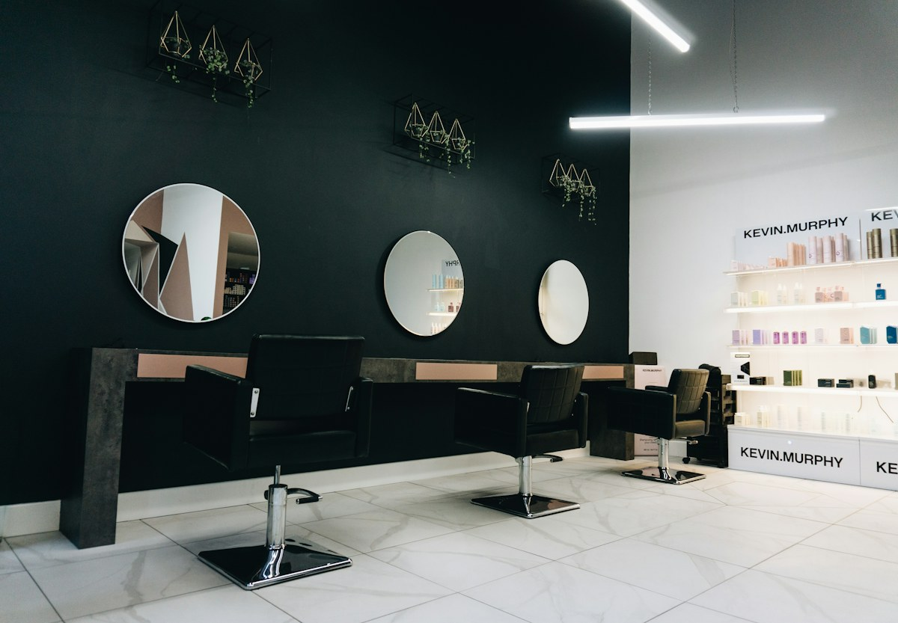

Escolha seu cuidado
Veja valores de referência e o tempo estimado de cada serviço.
Um encontro entre o que você imagina e o que faz sentido para seu cabelo. Conheça o serviço, a duração estimada e quem pode receber você.

Veja valores de referência e o tempo estimado de cada serviço.
Selecione o profissional e a data. A disponibilidade exibida é demonstrativa.
Em um salão real, a equipe confirma o horário, o valor e os cuidados de preparação.
Valores demonstrativos. Serviços de cor exigem avaliação; duração e orçamento finais são confirmados pelo salão.
Esta ação não confirma nem garante uma reserva.

Retrato ilustrativo de banco de imagens. Não representa uma profissional deste estabelecimento.
Conte como é sua rotina, quais estilos você gosta e quanto tempo quer dedicar ao cuidado em casa. A equipe conversa sobre possibilidades, manutenção e orçamento antes de começar.
Apresente aqui quem vai receber você: nome, fotografia autorizada, especialidades e experiência da equipe. Conhecer as pessoas ajuda a escolher com confiança.
Prefere um atendimento mais tranquilo? Precisa de acessibilidade? Quer conversar sobre manutenção e duração? A recepção combina esses detalhes antes da visita.
Modelo de apresentação: textos, fotografias e abordagem serão construídos com cada profissional.
Não. Este modelo cria uma solicitação de exemplo, guardada apenas nesta sessão do navegador. Em uma operação real, a confirmação identifica serviço, profissional, data, início e duração estimada.
Os valores são demonstrativos. Comprimento, técnica e avaliação podem alterar orçamento e duração. Qualquer ajuste deve ser explicado e combinado antes do serviço.
Na versão do salão, a confirmação deve trazer o canal de contato e as condições de remarcação. A equipe verifica o impacto na agenda e combina a alternativa com você. Esta demonstração não envia avisos.